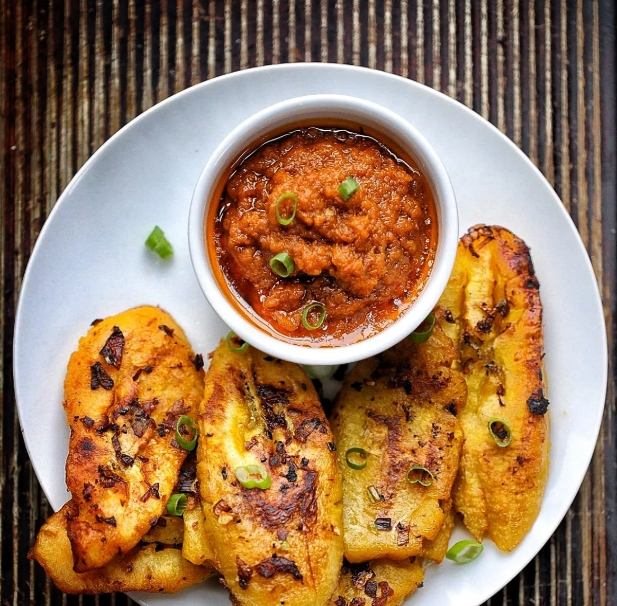

Pan-fried plantains recipe
Crunchy on the outside and soft inside, pan-fried plantains are a game-changer for snack time. You just need a pan and a few minutes.
Pan-Fried Plantains could be your new favorite comfort food. Perfect for a cozy evening at home.
Ingredients
- Plantain: Unripe green plantains are the main ingredient of this dish.
- Coconut oil: I prefer coconut oil as it elevates the dish in my opinion
- Curry leaves
- Whole and powdered spices: This dish has minimal spices. The whole spices used are mustard seeds and cumin seeds.
The powdered spices I use here are turmeric powder and chili powder.
Steps
- Wash, peel, and chop the plantains into small cubes. Soak them in cold water
- Place a frying pan or kadhai on medium heat and add coconut oil. Once it heats, add the mustard seeds and let them splutter.
Add cumin seeds, curry leaves, and hing. Saute for a few seconds
- Drain the water from the chopped plantain and add it to the frying pan. Add turmeric powder, red chili powder, and salt
- Mix well, making sure the plantains are well-coated with spices. Cover and let it cook completely
- Once the plantains are cooked, increase the heat and let them char slightly.
Add grated coconut and cilantro before serving the pan-fried plantains.
Your healthy and tasty meal is ready!
